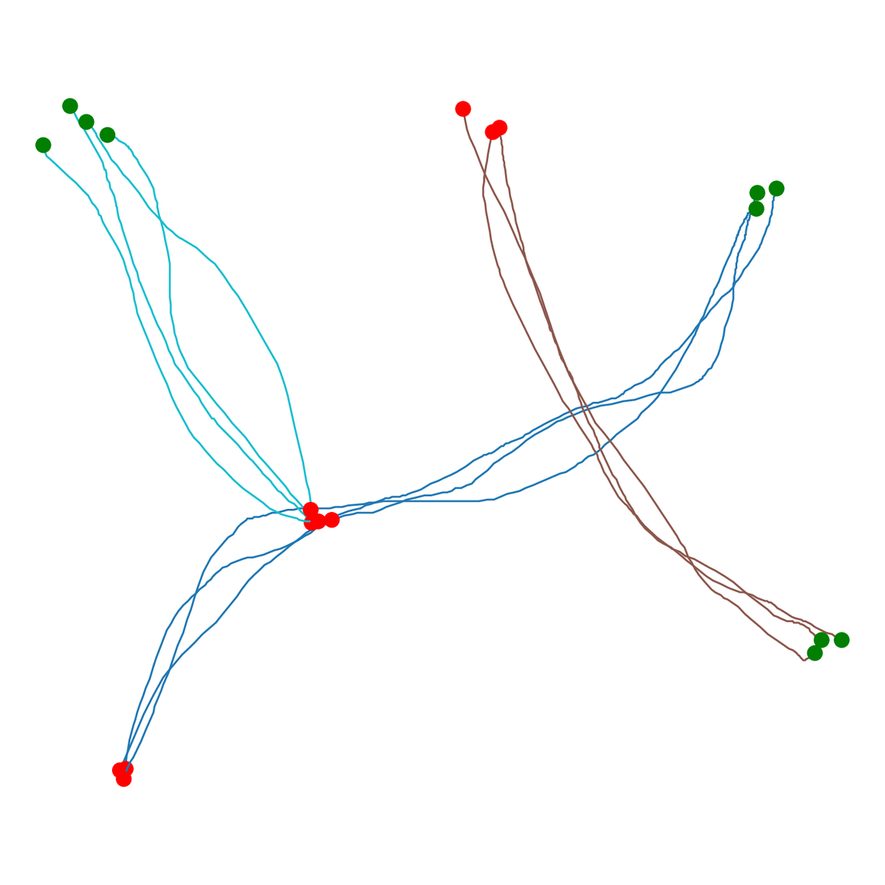
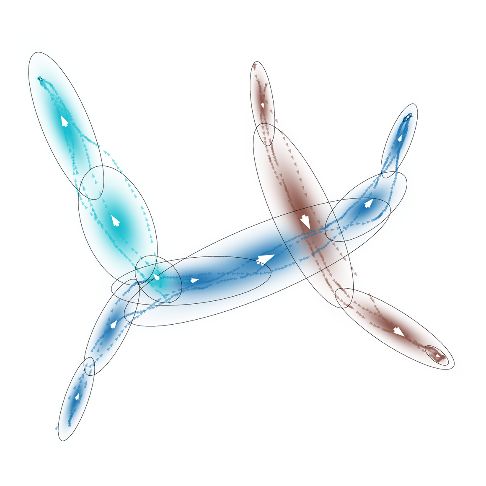
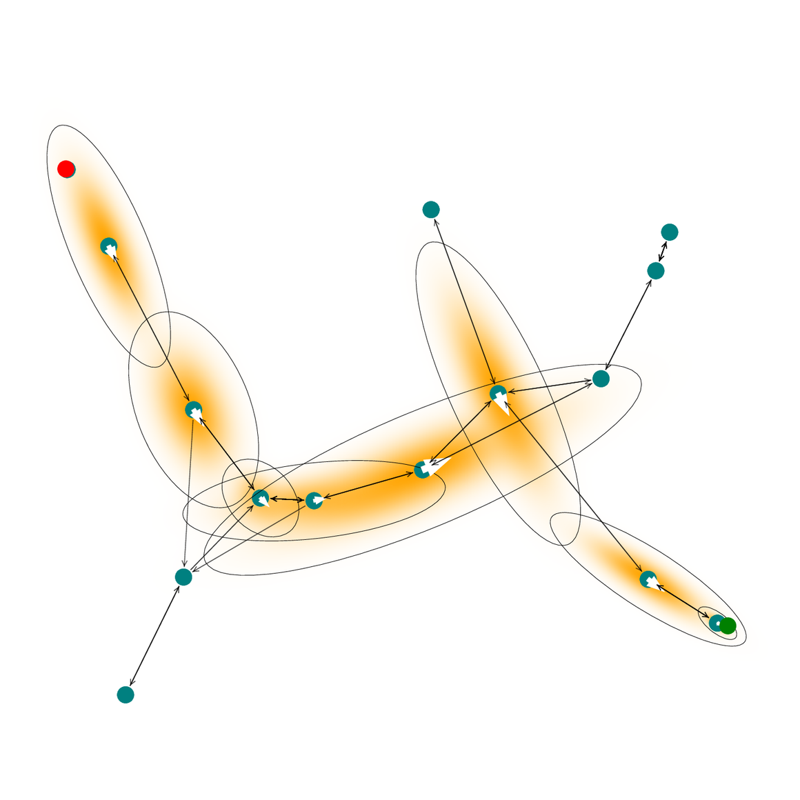
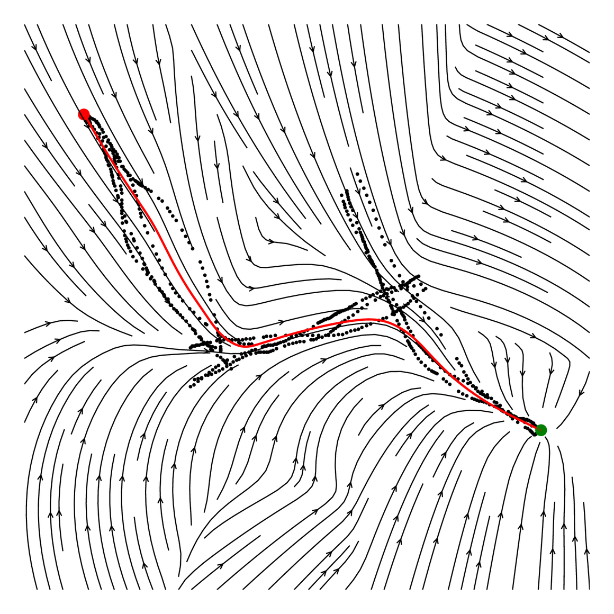
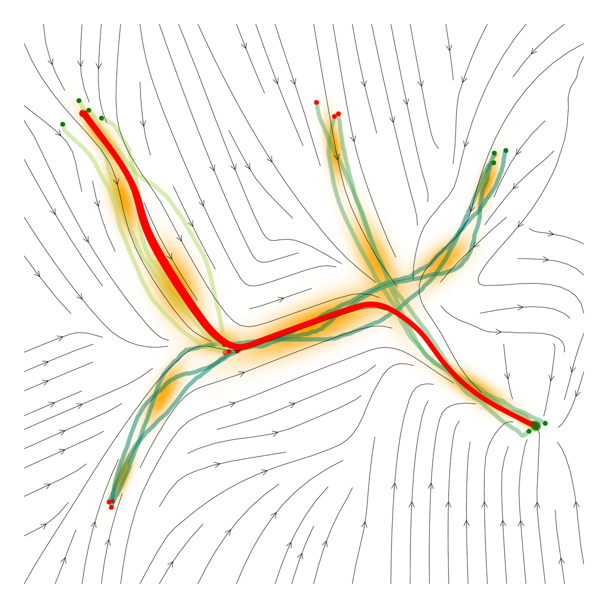
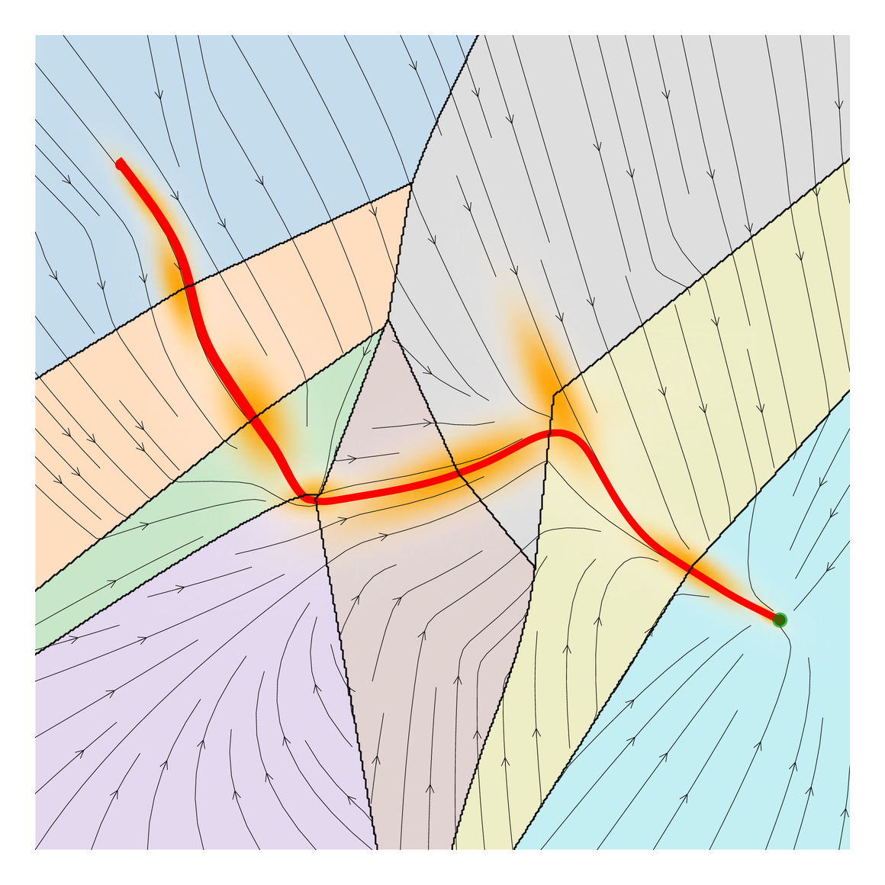

A handful of isolated demonstrations, reinterpreted as a graph, becomes a reactive and provably stable policy for tasks that were never shown.
Demonstrations for different tasks share the same workspace. We treat the Gaussian components of learned motion primitives as vertices of a graph, then search that graph to stitch and chain old motions into new ones — no retraining, no new data, and stability is preserved.
Each stage consumes what the previous one produced, bridging continuous control with discrete graph search.

A few expert trajectories per task, collected in one shared workspace.

Fit locally linear motion primitives — the Gaussians summarizing each demonstration.

Each Gaussian becomes a vertex; search the graph for a path from start to goal.

Realize the path as a stable dynamical system that flows to the goal from anywhere.
Each demonstration solves a single, self-contained task in the shared workspace. On their own, they don't transfer to new start–goal pairs.
Neither task below was ever demonstrated. Both are produced by searching the Gaussian Graph and chaining the primitives — reactive, convergent, and stable throughout.
The Gaussian Graph supports two ways to assemble a new policy — a single time-invariant field, or an ordered sequence of motions. Both are globally asymptotically stable, provably converging to the goal.

Merge the primitives along a graph path into a single Linear Parameter Varying dynamical system that flows to the goal from anywhere in its basin.

Fit one linear DS per node on the path and switch or blend between them online, composing complex motions that a single field can't represent.
Learning motion policies from expert demonstrations is an essential paradigm in modern robotics. While end-to-end models aim for broad generalization, they require large datasets and computationally heavy inference. Conversely, learning dynamical systems (DS) provides fast, reactive, and provably stable control from very few demonstrations. However, existing DS learning methods typically model isolated tasks and struggle to reuse demonstrations for novel behaviors.
In this work, we formalize the problem of combining isolated demonstrations within a shared workspace to enable generalization to unseen tasks. The Gaussian Graph is introduced, which reinterprets spatial components of learned motion primitives as discrete vertices with connections to one another. This formulation allows us to bridge continuous control with discrete graph search. We propose two frameworks leveraging this graph: Stitching, for constructing time-invariant DSs, and Chaining, giving a sequence-based DS for complex motions while retaining convergence guarantees. Simulations and real-robot experiments show that these methods successfully generalize to new tasks where baseline methods fail.
@article{freitag2026zeroshot, title = {Zero-Shot Generalization from Motion Demonstrations to New Tasks}, author = {Freitag, Kilian and Combrink, Alvin and Figueroa, Nadia}, journal = {arXiv preprint arXiv:2603.15445}, year = {2026} }